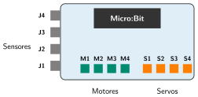
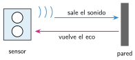
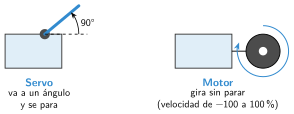
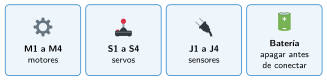

Sensores y actuadores externos con el Nezha
🤔 Pienso5 min
Qué hago aquí: Piensa un momento y contesta con lo que ya sabes. No pasa nada si no lo sabes: es para empezar.
Al aparcar, muchos coches pitan más rápido cuanto más cerca está la pared. ¿Qué sensor usan? ¿Y qué actuador?
📖 Leo y aprendo15 min
Qué hago aquí: Lee despacio, mira los dibujos y los ejemplos, y quédate con la idea clave del final.
Para mover un robot hacen falta motores y más sensores. Un motor necesita más energía de la que da la Micro:Bit. Por eso se usa una placa de expansión.
La nuestra es la Nezha. Tiene tres tipos de conexiones:

En MakeCode, pulsa Extensiones y busca nezha. Para los sensores, busca PlanetX. Aparecen bloques nuevos (algunos en inglés).



✏️ Hago25 min
Qué hago aquí: Haz las actividades en orden. Empieza siempre por las básicas.
¿Servo o motor? Escribe S o M.
Escribe dónde conectas cada cosa en el Nezha.
| Rueda | Servo | Sensor de ultrasonidos |
|---|---|---|
Muestra en la pantalla la distancia del sensor de ultrasonidos. Acerca la mano. ¿Qué pasa con el número?
Monta la barrera de aparcamiento y pruébala con la mano.
Programa un motor en M1: al pulsar A, hacia delante al 50 %; al pulsar B, parado. Escribe los bloques.
✏️ Puedes responder escribiendo, con un dibujo o un esquema, o contándolo en voz alta.
🚀 Amplío (si quieres saber más)
Qué hago aquí: ¿Has terminado? Lee la curiosidad o elige el reto. Es voluntario.
La velocidad del motor depende de la distancia: a más de 30 cm, 80 %; entre 10 y 30 cm, 30 %; a menos de 10 cm, parado. Dibuja los bloques.
✅ Compruebo5 min
Qué hago aquí: Contesta sin mirar la ficha y marca cómo lo llevas.